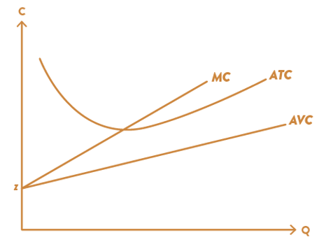

Kapittel 6 - Produksjonsteori#
1. Kostnader på kort sikt#
Vi skal skrive kostnadsfunksjonen på kort sikt som en funksjon av hvor mange enheter bedriften produserer. På kort sikt antar vi at kapitalen ligger fast.
Vi får da følgende produktfunksjon:
På kort sikt har bedriften tilgang til begrenset kapital \(K_0\). Prisen per enhet kapital er fast \(r\), mens én time med arbeidskraft koster \(w\). På kort sikt kan bedriften velge hvor mange timer arbeidskraft som tilsettes. I tillegg antar vi at bridften har kostnader til som vi kaller \((Z)\). Se matteboks 6.1
import numpy as np
from matplotlib import pyplot as plt
import sympy as sp
L, K, Q, Z, K_0, w, r, z, = sp.symbols('L K Q Z K_0 w r z', real=True, positive=True)
def q(K,L):
return (K_0**.5)*(L**.5)
def C_s(K,L):
return w*L+r*K_0+Z
L_sol=sp.solve (q(K,L)-Q,L)[0]
L_sol
# definer produktfunksjonen
def q(K,L):
return (K_0**.5)*(L**.5)
q(K,L)
# kostnad på kort sikt
def C_s(K,L):
return w*L+r*K_0+z*Q
C_s(K,L)
# Viser hvor mye arbeidskraft (L) som trenges for å produsere Q enheter ferdigprodukt
L_sol=sp.solve (q(K,L)-Q,L)[0]
L_sol
# kostnader kort sikt
TC_s=C_s(K,L).subs(L,L_sol)
display(TC_s)
# varialbe kostnad på kort sikt
def VC_s(K,L):
return (w*Q**2/K_0)+z*Q
VC_s(K,L)
# Grensekostnader
def MC(TQ,K):
return sp.diff(C_s(K,L).subs(L,L_sol),Q)
display(MC(Q,K))
# Gjennomsnittlige variable kostnader
def AVC_var(Q,K):
return (VC_s(Q,K))/Q
sp.simplify(AVC_var(Q,K))
# Faste kostnad på kort sikt
def FC_s(K,L):
return r*K_0
FC_s(K,L)
# Gjennomsnittlige faste kostnader
def AFC_var(Q,K):
return (FC_s(Q,K))/Q
display (AFC_var(Q,K))
# Gjennomsnittlige totale kostnader
def ATC_var(Q,K):
return (C_s(K,L).subs(L,L_sol))/Q
sp.simplify(ATC_var(Q,K))

2. Skalautbytte#
Vi er interessert i et mål for produksjonen når vi oppskalerer bruken av alle faktorer. Dette kalles skalautbytte. Dersom bedriften øker innsatsen av alle faktorer med 20% og den får en 20% økning i produksjon har bedriften en teknologi som viser konstant skalautbytte. Dersom produksjon øker med mer enn 20% viser teknologien økende skalautbytte; øker produksjon med mindre en den proporsjonale faktorøkningen har vi med en teknologi å gjøre med avtakende skalautbytte.
La oss tenke oss følgende produktfunksjon som forvandler arbeidskraft og kapital til et ferdig produkt: $\( Q=Q(K,L). \)$
En økning i bruken av begge faktorer kan kapres matematisk ved å gange innsatsen med et tall \(t>1\). Da blir produksjonsmengden gitt ved \(Q(tK,tL)\). Vi har
Konstant skalautbytte dersom \(Q(tK,tL)=tQ(K,L)\)
Økende skalautbytte dersom \(Q(tK,tL)>tQ(K,L)\)
Avtakende skalautbytte dersom \(Q(tK,tL)<tQ(K,L).\)
Skalautbytte i Cobb-Douglas produktfunksjoner
En bedrift bruker følgende Cobb-Douglas produktfunksjon til å lage et gode
hvor \(Q\) er enheter ferdigprodukt, \(L\) er enheter arbeidskraft (målt i timer), \(K\) er enheter kapital.
La oss undersøke skalaegenskapene til denne produktfunksjon.
# # definer nye symboler
K, a, b = sp.symbols('K a b', positive=True, real=True)
# definer produktfn
def prod_cd(L,K,a,b):
return L**a*K**b
# finn "overskudd" fra en fordobling av innsats i forhold til dobbel så mye produksjon
# NB begge innsatsfaktorene fordobles
overskudd_cd=prod_cd(2*L,2*K,a,b)-2*prod_cd(L,K,a,b)
sp.simplify(overskudd_cd)
Dersom dette uttrykket er positivt har vi med økende skalautbytte å gjøre. Vi ser at det er delen i parentes som vi må analysere, og her blir \(a+b\) viktig for fortegnet her. Dersom \(a+b=1\) er overskudd_cd = 0; dersom \(a+b>1\) er overskudd_cd > 0; dersom \(a+b<1\) er overskudd_cd < 0. Da har vi utledet et generelt resultat for Cobb-Douglas produktfunksjoner som i (3):
\(a+b<1\) betyr avtakende skalautbytte
\(a+b=1\) betyr konstant skalautbytte
\(a+b>1\) betyr økende skalautbytte.
3. Kostnader på lang sikt#
På lang sikt vil vi kunne endre både innsatsen av kapital (K) og arbeidskraft (L).
Vi får da følgende produktfunksjon:
# Fra matteboks 5.2 i kapittel 5 vet vi at optimal innsats av kapital er lik: og arbeidskraft
def K_opt(Q,w,a):
return Q*(a*w/((1-a)*r))**(1-a)
K_opt(Q,w,a)
# og optimal innsatsen arbeidskraft er lik
def L_opt(Q,w,a):
return Q*((1-a)*r/(a*w))**(a)
L_opt(Q,w,a)
# kostnad på lang sikt
def C_l(K,L):
return w*L+r*K+z*Q
C_l(K,L)
TC_l=C_l(K,L).subs(L,L_opt(Q,w,a))
display(TC_l)
# totale kostnader på lang sikt
TC_l=(C_l(K,L).subs(L,L_opt(Q,w,a))).subs(K,K_opt(Q,w,a))
display(TC_l)
# Grensekostnader
def MC(TQ,K):
return sp.diff((C_l(K,L).subs(L,L_opt(Q,w,a))).subs(K,K_opt(Q,w,a)),Q)
display(MC(Q,K))
# Gjennomsnittlige totale kostnader
def ATC_LS(Q,K):
return ((C_l(K,L).subs(L,L_opt(Q,w,a))).subs(K,K_opt(Q,w,a))/Q)
ATC_LS(Q,K)